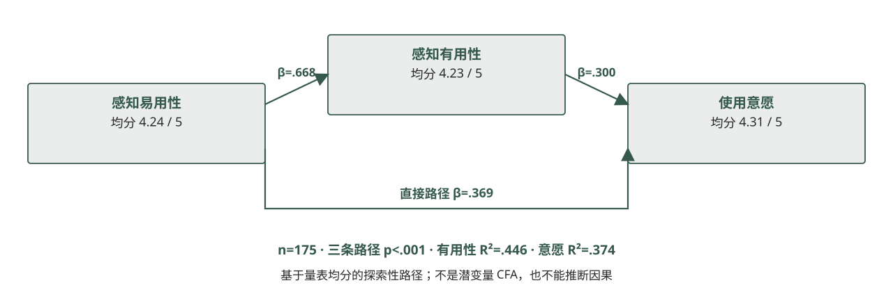

（五）结果解释与建议TAM 机制：有用、易用与意愿
175 份完整量表的三维均分均超过 4/5；探索性路径显示易用性与有用性、意愿正相关，有用性也与意愿正相关。相关路径不能证明因果。

证据与状态 现有报告：n=175；易用 4.24、有用 4.23、意愿 4.31；间接效应 .200，95% CI [.082,.336]。
175 份完整量表的三维均分均超过 4/5；探索性路径显示易用性与有用性、意愿正相关，有用性也与意愿正相关。相关路径不能证明因果。

证据与状态 现有报告：n=175；易用 4.24、有用 4.23、意愿 4.31；间接效应 .200，95% CI [.082,.336]。